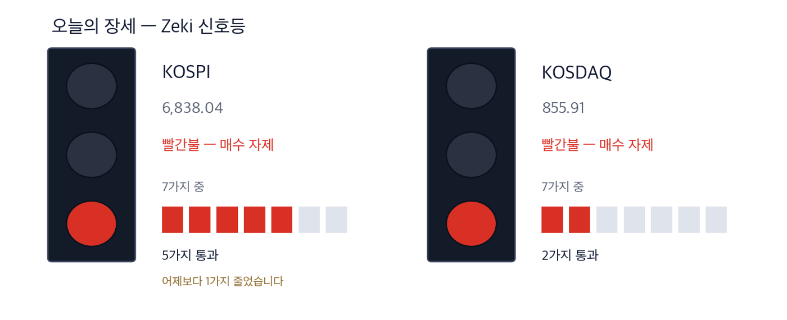

코스피 6,971.35 +1.95% | 코스닥 894.29 +4.48% | 제키 신호등 노란불 |

초록불은 매수 우위, 노란불은 관망, 빨간불은 매수 자제입니다. 칸은 7가지 조건 중 몇 가지를 만족하는지이고, 많을수록 오르는 종목이 넓게 퍼져 있습니다. 1일 종가 기준 코스피는 7가지 가운데 6가지를 만족해 노란불입니다. 코스닥은 2가지로 빨간불입니다. 코스피는 어제보다 1가지 늘었습니다.
관망 — 신호등이 뜻하는 자세입니다.
코스피가 4거래일 만에 반등했습니다. 1일 1.95% 올라 6,971.35에 마감했습니다. 코스닥은 4.48% 뛰어 894.29가 됐습니다.
반등의 계기는 간밤 미국에서 나온 두 소식이었습니다. 8월 개인소비지출 물가가 예상보다 낮았습니다. 마이크론은 사상 최대 분기 실적을 냈고, 주가는 뉴욕 장 마감 뒤 1% 가까이 올랐습니다. (IBD 9/30) 업종별로는 반도체와 제약바이오가 상승을 이끌었습니다. 반도체 안에서도 부품·장비주의 상승 폭이 대형주보다 컸습니다.
외국인은 유가증권시장에서 5거래일째 팔았습니다(5,485억원). 반면 코스닥에서는 2,278억원을 샀습니다. 기관도 코스닥에서 5,681억원을 샀습니다. (한국경제 10/2자)
① 반도체는 대형주보다 부품·장비주가 먼저 움직였습니다. 1일 삼성전자는 2.8%, SK하이닉스는 3.2% 올랐습니다. 같은 날 대덕전자는 12.75%, 삼화콘덴서는 6.37% 올랐습니다. 반도체 기판 재료 납기가 평소의 4배를 넘었습니다.
② 데이터센터 냉각이 새 수출 품목이 되고 있습니다. LG전자가 미국 버지니아에 칠러 공장을 짓습니다. 오텍캐리어의 냉각 장치는 엔비디아 인증을 받았습니다. LG전자는 외국인과 기관이 함께 산 종목입니다.
③ 오늘은 사흘 휴장 전 마지막 거래일입니다. 3일 개천절과 5일 대체공휴일로 6일에 다시 엽니다. 그사이 미국 9월 고용 보고서가 나옵니다. 1일 오른 종목이 마감까지 값을 지키는지가 먼저입니다.
숫자 하나는 9월 수출 1,200억달러입니다. 한 달 수출로 사상 최대이며 반도체가 이끌었습니다. 반도체는 하루 평균 7조6000억원어치가 나갔습니다. 한편 미국 10년물 국채 금리는 1일 장중 연 5.34%로 24년 만에 가장 높았습니다. (매일경제·한국경제 10/2자)
| 날짜 | 무엇을 보는가 | 시장에 어떤 영향 |
|---|---|---|
| 10월 2일(금) | 사흘 휴장 전 마지막 거래일 | 휴장 동안의 미국 장 위험을 미리 덜려는 매도가 나올 수 있습니다 |
| 10월 2일(금) 밤 | 미국 9월 고용 보고서 (한국 시각 21:30) | 금리와 달러를 움직이고, 그 결과가 6일 개장에 한꺼번에 들어옵니다 |
| 10월 6일(화) | 휴장 뒤 첫 거래일 | 사흘 동안 쌓인 미국 장 결과가 반영됩니다 |
마이크론은 2028회계연도까지 메모리 수급이 지금보다 더 빠듯할 것이라고 밝혔습니다. 장기공급계약이 매출에서 차지하는 비중도 25%에서 35%로 높아졌습니다. 내년 HBM 물량은 이미 다 팔렸다고 했습니다. (한국경제·매일경제 10/2자)
부족은 부품에서 더 심합니다. 시장조사업체 트렌드포스에 따르면 반도체 패키지 기판 재료(ABF)의 납기는 48~56주입니다. 평소 12주의 4배가 넘습니다. 최근 한 달 삼성전자가 3.5% 오르는 동안 하나마이크론은 43%, 삼화콘덴서는 41%, 대덕전자는 32% 올랐습니다.
| 종가 | 당일 | 한 주 | 20거래일 |
|---|---|---|---|
| 158,700원 | +6.37% | +7.67% | +41.07% |
| 3개월 | 제키 강도 | 고점 대비 |
|---|---|---|
| +5.10% | 97 | -19.36% |
| 누가 | 삼화콘덴서, 적층세라믹콘덴서(MLCC) 등 전자 부품을 만드는 회사입니다. |
| 무엇을 | 1일 6.37% 올라 158,700원에 마감했습니다. 거래량은 50일 평균의 1.47배였습니다. |
| 언제 | 10월 1일, 4분기 첫 거래일입니다. |
| 어디서 | 유가증권시장에 상장돼 있습니다. 하루 거래대금은 약 1,522억원입니다. |
| 왜 | 서버와 전자 기기마다 콘덴서가 들어가 메모리 증설이 부품 주문으로 이어지기 때문입니다. |
| 어떻게 | 마이크론이 설비투자를 늘리겠다고 밝혀 부품 수요가 길게 이어질 수 있습니다. |
| 종가 | 당일 | 한 주 | 20거래일 |
|---|---|---|---|
| 149,400원 | +12.75% | +33.04% | +33.99% |
| 3개월 | 제키 강도 | 고점 대비 |
|---|---|---|
| -2.73% | 95 | -24.55% |
| 누가 | 대덕전자, 반도체 패키지 기판을 만드는 회사입니다. |
| 무엇을 | 1일 12.75% 올라 149,400원에 마감했습니다. 오늘 실은 4종목 가운데 상승률 1위입니다. |
| 언제 | 10월 1일, 마이크론 실적 발표 뒤 첫 거래일입니다. |
| 어디서 | 유가증권시장에 상장돼 있습니다. 하루 거래대금은 약 1,184억원입니다. |
| 왜 | 기판 재료 납기가 평소의 4배를 넘어 기판 공급이 가장 빠듯한 고리이기 때문입니다. |
| 어떻게 | 거래량이 50일 평균의 1.98배로 늘며 올랐습니다. |
LG전자가 미국 버지니아주 윈저에 칠러 공장을 짓습니다. 칠러는 건물 전체에 쓸 찬물을 만드는 대형 냉각 장비입니다. 내년 상반기 생산이 목표입니다. 평택·창원 공장 증설을 합쳐 1500억원을 씁니다. (매일경제 10/2자)
같은 날 오텍캐리어는 냉각수 분배 장치가 엔비디아 품질 인증을 받았다고 밝혔습니다. (한국경제 10/2자) 시장조사업체 옴디아는 세계 데이터센터 전력 용량이 올해 226GW에서 2030년 420GW로 늘 것으로 봅니다. 그 60%가량이 북미입니다.
| 종가 | 당일 | 한 주 | 20거래일 |
|---|---|---|---|
| 211,500원 | -0.47% | -2.31% | +2.42% |
| 3개월 | 제키 강도 | 고점 대비 |
|---|---|---|
| +4.19% | 91 | -51.71% |
| 누가 | LG전자, 가전과 냉난방 공조 장비를 만드는 회사입니다. |
| 무엇을 | 미국에 데이터센터용 공랭식 칠러 공장을 짓고 국내 생산 라인도 늘립니다. |
| 언제 | 10월 1일 발표했습니다. 미국 공장은 내년 상반기 생산이 목표입니다. |
| 어디서 | 미국 버지니아주 윈저입니다. 빅테크 데이터센터가 모여 있는 지역입니다. |
| 왜 | 데이터센터가 늘수록 열을 식히는 장비가 함께 필요하기 때문입니다. |
| 어떻게 | 찬물을 만드는 칠러부터 칩에 붙는 냉각판까지 한 묶음으로 팝니다. |
산업통상부가 1일 한·미 원전 협력 틀을 발표했습니다. 미국에 대형 원전 8기를 짓고 최대 1,200억달러를 넣습니다. 이 가운데 2기는 한국형 원전 APR1400입니다. 외국 노형이 미국 본토에 들어가는 것은 처음입니다. (한국경제·매일경제 10/2자)
건설비는 2기당 250억달러로 잡았습니다. 국내 민간 기업이 웨스팅하우스 지분 5~10%를 사는 방안도 합의문에 담겼습니다. 부지는 오하이오·테네시 등이 거론되지만 아직 정하지 않았습니다.
| 종가 | 당일 | 한 주 | 20거래일 |
|---|---|---|---|
| 82,100원 | +0.61% | -5.09% | +0.86% |
| 3개월 | 제키 강도 | 고점 대비 |
|---|---|---|
| -5.41% | 48 | -41.02% |
| 누가 | 두산에너빌리티, 원자로와 발전 설비를 만드는 회사입니다. |
| 무엇을 | 미국 투자매체 배런스가 원자로 압력용기의 핵심 공급사로 꼽았습니다. 베트남에서 8,400억원 규모 가스 발전소도 수주했습니다. |
| 언제 | 원전 협력 틀은 10월 1일 발표됐습니다. 부지 확정은 그 뒤입니다. |
| 어디서 | 유가증권시장에 상장돼 있습니다. 미국 현장은 아직 정해지지 않았습니다. |
| 왜 | 한국이 첫 사업으로 고른 텍사스 가스 발전소에도 주요 기자재를 댈 수 있기 때문입니다. |
| 어떻게 | 1일 0.61% 올라 82,100원에 마감했습니다. 거래량은 50일 평균의 0.84배로 적었습니다. |
1일 철근 업체 대한제강이 16.82% 올라 9,100원에 마감했습니다. 고려제강도 5.02% 올랐습니다. 미국 인공지능 데이터센터 공사로 8월 대미 철강재 수출량이 1년 전보다 145.5% 늘었습니다.
그러나 두 종목 모두 추세 지표가 0 아래입니다(가격의 -0.48%, -1.72%). 중국산 저가 강판이 국내에 계속 들어오는 것도 부담입니다. (매일경제·한국경제 10/2자) 하루 급등이 추세로 바뀌는지 보고 나서 다룹니다.
| 종목 | ①20거래일 상승 | ②강도 90↑ | ③외국인 순매수 | ④기관 순매수 | 충족 | 근거의 무게 |
|---|---|---|---|---|---|---|
| 삼화콘덴서(001820) | O | O | O | O | 4/4 | 근거 확실 |
| 대덕전자(353200) | O | O | O | X | 3/4 | 근거 있음 |
| LG전자(066570) | O | O | O | O | 4/4 | 근거 확실 |
| 두산에너빌리티(034020) | O | X | X | X | 1/4 | 확인 필요 |
네 칸은 ①20거래일 동안 올랐는가 ②제키 강도가 90 이상인가 ③외국인이 20거래일 순매수했는가 ④기관이 20거래일 순매수했는가입니다. O의 개수가 근거의 무게를 정합니다. 오늘 실은 4종목 가운데 ①을 넘은 곳은 4곳, ②는 3곳, ③은 3곳, ④는 2곳입니다. 반도체 부품과 냉각 장비는 값과 돈이 함께 왔고, 원전은 뉴스만 앞서 있습니다.
| 종목 | 외국인 · 기관 20거래일 | 거래량 | 어떻게 읽나 |
|---|---|---|---|
| SFA반도체 036540 | 외 +14.6 · 기 -4.8 | 1.69배 | 주의 — 외국인만 사고 다른 쪽은 팔았습니다 |
| 포스코인터내셔널 047050 | 외 -1.8 · 기 +18.4 | 0.38배 | 주의 — 기관만 사고 다른 쪽은 팔았습니다 |
| 포스코DX 022100 | 외 -0.9 · 기 +9.8 | 0.25배 | 주의 — 기관만 사고 다른 쪽은 팔았습니다 |
| 대한항공 003490 | 외 +8.9 · 기 +2.9 | 0.99배 | 확인✓ — 함께 샀지만 거래가 얕습니다 |
| 우리금융지주 316140 | 외 +32.8 · 기 +2.6 | 0.93배 | 확인✓ — 함께 샀지만 거래가 얕습니다 |
| 대우건설 047040 | 외 -5.1 · 기 -2.8 | 1.27배 | 주의 — 둘 다 파는데 물량이 늘었습니다 |
| 삼성전자 005930 | 외 -19.5 · 기 +12.0 | 0.71배 | 주의 — 기관만 사고 다른 쪽은 팔았습니다 |
| 두산에너빌리티 034020 | 외 -7.2 · 기 -0.6 | 0.88배 | 관망 — 둘 다 팔지만 거래가 말랐습니다 |
| LG디스플레이 034220 | 외 -9.0 · 기 -0.7 | 0.67배 | 관망 — 둘 다 팔지만 거래가 말랐습니다 |
| 넷마블 251270 | 외 -11.2 · 기 -0.2 | 0.36배 | 관망 — 둘 다 팔지만 거래가 말랐습니다 |
| 종목 | 20일 동안 더 산 양(주) | Zeki 강도 | 20거래일 등락 | 기준일 |
|---|---|---|---|---|
| 우리금융지주 316140 | +32,750,210 | 66 | -3.8% | 10-01 |
| SFA반도체 036540 | +14,581,038 | 94 | +87.7% | 10-01 |
| 대한항공 003490 | +8,919,885 | 74 | +8.5% | 10-01 |
| 고영 098460 | +3,496,834 | 80 | +21.4% | 10-01 |
| 현대무벡스 319400 | +2,258,939 | 74 | -9.4% | 10-01 |
| 종목 | 20일 동안 더 산 양(주) | Zeki 강도 | 20거래일 등락 | 기준일 |
|---|---|---|---|---|
| 삼성전자 005930 | -19,460,491 | 92 | +5.7% | 10-01 |
| 넷마블 251270 | -11,181,305 | 11 | -10.1% | 10-01 |
| LG디스플레이 034220 | -8,982,290 | 8 | -7.5% | 10-01 |
| 한온시스템 018880 | -8,101,158 | 51 | +3.8% | 10-01 |
| 두산에너빌리티 034020 | -7,165,136 | 48 | +0.9% | 10-01 |
| 종목 | 20일 동안 더 산 양(주) | Zeki 강도 | 20거래일 등락 | 기준일 |
|---|---|---|---|---|
| 포스코인터내셔널 047050 | +18,384,472 | 53 | +0.0% | 10-01 |
| 삼성전자 005930 | +11,983,544 | 92 | +5.7% | 10-01 |
| 포스코DX 022100 | +9,813,457 | 20 | -5.5% | 10-01 |
| 한온시스템 018880 | +5,822,065 | 51 | +3.8% | 10-01 |
| 맥쿼리인프라 088980 | +4,918,321 | 27 | -2.1% | 10-01 |
| 종목 | 20일 동안 더 산 양(주) | Zeki 강도 | 20거래일 등락 | 기준일 |
|---|---|---|---|---|
| SFA반도체 036540 | -4,813,766 | 94 | +87.7% | 10-01 |
| 대우건설 047040 | -2,839,777 | 95 | +5.6% | 10-01 |
| 고영 098460 | -2,526,938 | 80 | +21.4% | 10-01 |
| NAVER 035420 | -2,091,200 | 27 | -11.1% | 10-01 |
| 실리콘투 257720 | -1,928,024 | 54 | -26.2% | 10-01 |
기사와 값이 맞아도 자금은 따로 봅니다. 아래 표는 1일 거래량이 넘어야 할 거래량(50일 평균)을 실제로 넘었는지를 답합니다.
| 종목 | 넘었나 | 수급(기준일) | 어떻게 읽나 |
|---|---|---|---|
| 삼화콘덴서(001820) | 1.47배 ✓ | 외 매수 · 기 매수 (10/1) | 관심 — 외국인·기관이 함께 샀고 거래도 늘었습니다 |
| 대덕전자(353200) | 1.98배 ✓ | 외 매수 · 기 매도 (10/1) | 주의 — 외국인만 사고 다른 쪽은 팔았습니다 |
| LG전자(066570) | 0.45배 ✗ | 외 매수 · 기 매수 (10/1) | 확인 — 함께 샀지만 거래가 얕습니다 |
| 두산에너빌리티(034020) | 0.84배 ✗ | 외 매도 · 기 매도 (10/1) | 관망 — 둘 다 팔지만 거래가 말랐습니다 |
「넘었나」는 1일 거래량을 50일 평균으로 나눈 값이며, 1배를 넘으면 ✓입니다.
| 근거의 무게 | 종목 | KOSPI를 이긴 수 | 지수를 웃돈 폭 | 지수를 밑돈 폭 | 전부 평균 |
|---|---|---|---|---|---|
| 근거 확실 | 12 | 9 / 12 | +9.51%p | -4.35%p | +6.04%p |
| 근거 있음 | 15 | 7 / 15 | +6.66%p | -5.53%p | +0.16%p |
| 확인 필요 | 28 | 8 / 28 | +6.17%p | -4.27%p | -1.29%p |
| 근거 약함 | 1 | 1 / 1 | +7.22%p | 없음 | +7.22%p |
| 근거 없음 | 2 | 0 / 2 | 없음 | -5.15%p | -5.15%p |
| 테마 제외 | 1 | 1 / 1 | +4.40%p | 없음 | +4.40%p |
| 근거 확실 12 | +6.04%p | ||||||
| 근거 있음 15 | +0.16%p | ||||||
| 확인 필요 28 | −1.29%p | ||||||
| 근거 약함 1 | +7.22%p | ||||||
| 근거 없음 2 | −5.15%p | ||||||
| 테마 제외 1 | +4.40%p |
가운데 선이 KOSPI입니다. 오른쪽이 웃돈 것, 왼쪽이 밑돈 것입니다. 이름 옆 회색 숫자는 그 칸의 종목 수입니다.
근거 확실 12종목 가운데 9종목이 KOSPI를 이겼습니다. 이긴 9종목은 평균 9.5%p 웃돌았고, 진 3종목은 평균 4.4%p 밑돌았습니다. 전부 합치면 지수보다 +6.0%p 입니다.
20거래일(약 한 달) 뒤 결과는 10월 14일에 처음 나오고, 차는 대로 이 자리에 표로 더해집니다.
60거래일(약 3개월) 뒤 결과는 12월 9일에 처음 나오고, 차는 대로 이 자리에 표로 더해집니다.
판정. 두 시장 합쳐 60건이 찬 기간마다 미리 정해 둔 방식으로 판정해 그대로 싣습니다. 5거래일 134건 — 지수보다 낫다고 할 수 없습니다. 다만 근거 등급이 높은 종목이 성적도 좋았습니다. (41.8%가 지수를 이겼습니다) · 20거래일 0건 / 필요 60건 · 60거래일 0건 / 필요 60건
| 언제 | 무엇을 보는가 | 무엇을 뜻하는가 |
|---|---|---|
| 개장 30분(09:00~09:30) | 대덕전자가 1일 종가 149,400원 위에서 출발하는가 | 하루 급등에 차익 매물이 먼저 나오는지 드러납니다 |
| 장중 | 외국인이 유가증권시장에서 6거래일째 파는가 | 매도가 멈추면 반등이 대형주로 넓어질 수 있습니다 |
| 마감 30분(15:00~15:30) | 코스피가 6,971.35 위를 지키는가 | 1일 종가입니다. 휴장 전 마지막 날 값을 지키는지 보여 줍니다 |
2일은 휴장 전 마지막 거래일입니다. 반도체 부품주가 1일 값을 지키는지, 외국인 매도가 줄어드는지 확인합니다. 그날 밤 미국 9월 고용 보고서가 나오고, 결과는 6일 개장에 한꺼번에 들어옵니다.
This is the Rex Way, ZekiRex™